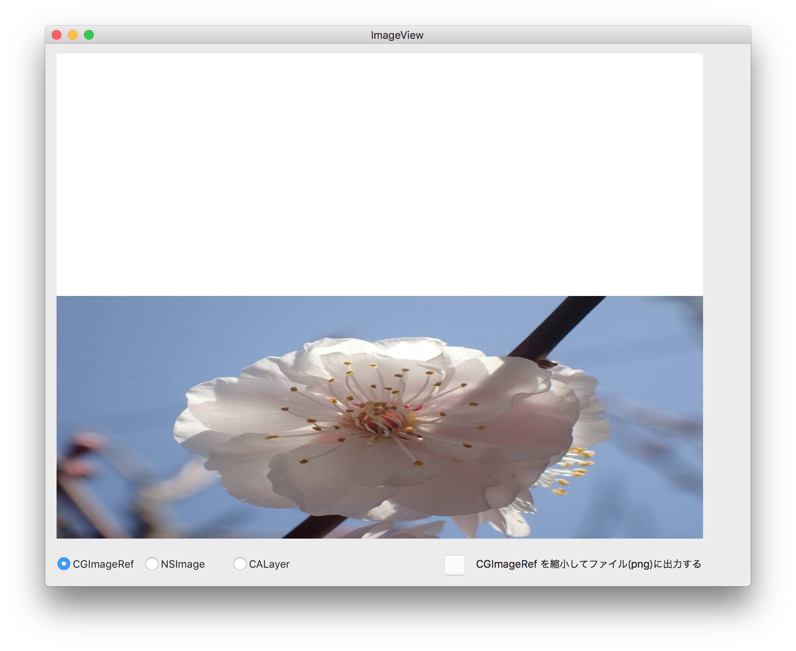

ビューにイメージを表示する（Core Graphics）
イメージの操作を行うには、CoreGraphicsの機能を利用する。これはlow-leveなl画像処理フレームワークであり、イメージの拡大/縮小をはじめ多様な変換処理が可能である。
イメージファイルを読み込む
CoreGraphicsでは、処理の対象となるイメージオブジェクトは、ビットマップイメージへの参照である CGImageRef型の変数となる。
イメージファイルをビットマップイメージとした読み込み、CGImageRef変数に参照をに格納する。
ビューにイメージを描画する
NSViewクラスのdrawRectメソッドの中で、Graphics Context（画像表示先、この場合はディスプレイ）を取得する。
CGContextDrawImage関数により、Graphics Contextにイメージを描画する。関数の引数には、 Graphics Context、表示領域のサイズ、イメージ（CGImageRef）を指定する。
イメージのサイズと表示領域のサイズが異なる場合、イメージは表示領域に合わせて拡大/縮小される。（ビューに表示されるイメージが拡大/縮小されるだけで、元のビットマップのサイズは変わらない）
例題では、NSViewオブジェクトのサイズは800x600ピクセルで定義している。読み込んだイメージファイルも同じ大きさなので、ビュー上には実際のサイズで表示される。これを、CGContextDrawImage関数の表示領域のサイズ（rect）を次のように指定すると横長のイメージで表示される。

イメージを拡大/縮小する
ビットマップイメージ自体の大きさを変える方法
変換のステップは、CGImageRef → ビットマップコンテキスト → CGImageRef
ビットマップコンテキストのところでサイズを変換する。
(1) ビットマップコンテキスト（CGContextRef）を作成する。コンテキストのサイズは変更後のサイズを指定する。例題では、800x600ピクセルのイメージを400x300に縮小するという想定。
(2) 変更前のイメージ（CGImageRef）をビットマップコンテキストに描画する。
第2引数のCGRect（矩形領域）には、変更後のサイズを指定する。元のイメージがこのサイズに拡大または縮小され、そのままのサイズでビットマップに映し出される。
(3) ビットマップコンテキストから変更後のイメージ（CGImageRef）を読み込む。
イメージ（CGImageRef）を画像ファイルに出力する
(1) CGImageRefをビットマップ画像（NSBitmapImageRep）に変換する。
(2) ビットマップ画像をNSDataオブジェクトに変換する。
このとき画像ファイルタイプ（png etc..）を指定する。
(3) NSDataオブジェクトをファイルに出力する。
イメージオブジェクトの変換
NSImage → CGImageRef
CGImageRef → NSImage
画像をビューに表示する別の方法
(1) NSImageオブジェクトを表示する（オーソドックスな方法か？）
NSViewクラスのdrawRectメソッドをオーバーライドし、drawInRectメソッド（またはdrawAtPointメソッド）を実行する。
引数に表示領域（CGRect構造体）を指定する。イメージのサイズと表示領域のサイズが異なる場合、イメージは表示領域に合わせて拡大/縮小される。
(2) CALayerオブジェクトを表示する
NSLayerオブジェクトを作成して、画像（NSImageオブジェクト）をセットし、親ビューのレイヤーに追加する。
画像を消すには、親ビューのレイヤーに追加したCALayerオブジェクトを削除する。
親ビューのレイヤーからCALayerオブジェクトを削除するとき、該当オブジェクトを特定する方法として、KVC（Key Value Codeing）を利用する。
追加したCALayerオブジェクトを、任意のKey値をつけて親ビューのレイヤーオブジェクトにセットする。オブジェクトを削除をするとき、キー値によりオブジェクトを取得することができる。（おそらくプロパティを動的に追加するような仕組みか？）
画像のサイズを取得する
(1) NSImage
(2) CAImageRef
ソースコード
カスタムビュークラス
UAView